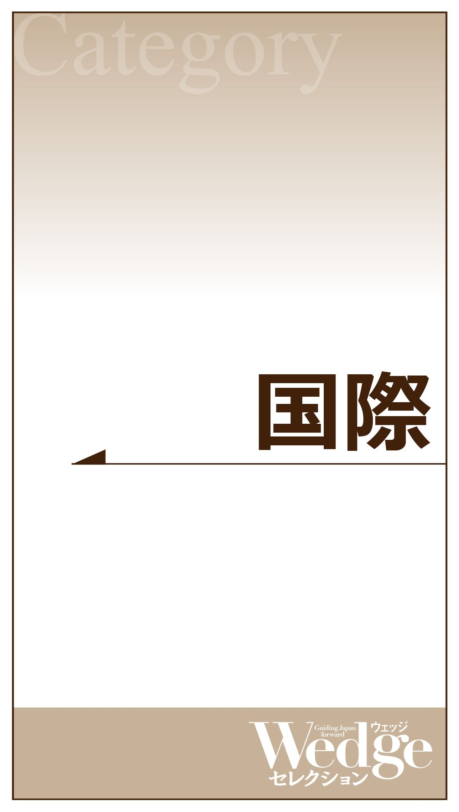
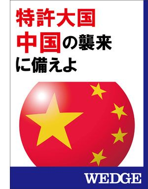

| 電子書籍目録―Wedgeセレクション50 | |
| Wedge編集部 | |
| (2015) | |
【はじめに】
この度は、『電子書籍目録─Wedgeセレクション50 』をダウンロードしていただき、ありがとうございます。
電子書籍シリーズ「Wedgeセレクション」は、国内外を問わず、いま注目すべきテーマを都度厳選し、雑誌「Wedge」やウェブマガジン「WEDGE Infinity」に掲載された記事を再編集・再構成するかたちで、電子書籍化して参りました。
日々、忙しく過ごされているビジネスパーソンを意識し、短時間でそのテーマに関する知見を効率よく得られるよう、内容をコンパクトにまとめ、お求め安い価格（２００円～３５０円／税別）でご提供しております。
今回、ご紹介させていただく50 作品は、２０１３年10 月のシリーズ創刊以来、この２年間で発刊してきたすべての作品となります。
今後も、時宜を得たテーマで新作を出し続けて参りますので、「Wedgeセレクション」にご注目いただければ幸いです。
【ご注意】
〈紹介ページへ〉 のリンクをクリックすると、その書籍のAmazon.co.jpの商品詳細ページが開きます。
※iPhone、iPod Touch、iPad用のkindleアプリからは、このリンクはご利用いただけません。「この操作は現在対応していません」というメッセージが表示される旨、ご了承ください。
※また、iPhone、iPod Touch、iPad用のkindleアプリをご利用の方も、左のリンク（Wedgeセレクション一覧ページ）から各ストアのページに移動できますので、どうぞご利用ください。


結局どうなる 中国経済
著者：富坂 聰／中島厚志／倉都康行／梶谷 懐／水谷幸資
発行：２０１５年10 月23 日
株安を制圧できず、通貨のコントロールに手こずる中国は、不良債権問題をうまく先送りできるのか。国家粉飾が疑われ、新興国からの資金流出が止まらない。デジャブ感たっぷりの光景に世界が怯える──。
〈紹介ページへ 〉
ＡＩＩＢの真実
著者：河合正弘／梅原直樹／廣瀬陽子／加藤隆俊／篠原尚之／岡崎研究所
発行：２０１５年６月26 日
８兆ドル（約９６０兆円）もの資金需要が生じるとされるアジアのインフラ整備。世界銀行やアジア開発銀行（ＡＤＢ）ではとてもその需要を賄うことができず、不満を持った中国が主体となってアジアインフラ投資銀行（ＡＩＩＢ）が設立された。欧州が続々と加盟を決めていく中、日本はどうするべきなのか。ＡＩＩＢの真実とは──。
〈紹介ページへ 〉
中国経済の危うい実態
著者：富坂 聰／石 平／岡崎研究所
発行：２０１４年３月21 日
不動産バブルの崩壊から環境汚染の深刻化まで、中国経済が抱えている破綻リスクを、徹底的に分析する。
〈紹介ページへ 〉
習近平 権力闘争の行方
著者：石 平／弓野正宏／佐々木智弘／岡崎研究所
発行：２０１５年２月27 日
腐敗撲滅の名目で次々と大物政治家を摘発し、権力を掌握していく習近平。これまでは、徐才厚、周永康といった江沢民派に連なる引退幹部がターゲットとされてきたが、ついには胡錦濤側近の現役幹部、令計画までも失脚に追い込んだ。習近平が仕掛ける苛烈な権力闘争の裏側と、その行方を読み解く。
〈紹介ページへ 〉
韓国 反日政策の落とし穴
著者：勝股秀通／岡本隆司／石 平／岡崎研究所
発行：２０１４年６月27 日
２０１３年２月に韓国の朴槿恵大統領が就任して以来、日韓関係はこじれたままである。中国へ傾倒し、日本を軽視する韓国の「反日一辺倒」政策の行方は。
〈紹介ページへ 〉
「イスラム国」の正体
なぜ、空爆が効かないのか
著者：池内 恵／髙岡 豊／マイケル・シン
発行：２０１４年10 月31 日
「イスラム国」とは一体何なのか──。誕生した背景、集結する人材、その目指すところなどについて、中東の専門家が分析する。米国を中心に空爆が行われているが、その裏には彼らを育ててしまった「焦り」も垣間見える。
〈紹介ページへ 〉
ウクライナ危機の真相 プーチンの思惑
著者：小泉 悠／佐々木正明／廣瀬陽子／亀山郁夫／佐藤 優／Wedge編集部
発行：２０１４年９月19 日
ウクライナをめぐって世界が駆け引きを続ける。「主役」の一人であるプーチン大統領の本音と今後について、５人のロシア専門家が論ずる。他では読めない、ロシアの実態が浮き彫りに。
〈紹介ページへ 〉
中国軍の実態 習近平の野望と軍拡の脅威
著者：小原凡司／佐々木智弘／弓野正宏／岡崎研究所
発行：２０１４年10 月31 日
南シナ海や東シナ海の領有権を巡り、強硬な姿勢を続ける中国。周辺国との摩擦がエスカレートするなか、習近平によって軍拡が進められている。中国軍の実力とはいかに──。
〈紹介ページへ 〉
中国覇権主義を打ち砕け
海洋進出に見る中国の思惑と対処法
著者：坂元茂樹／小谷哲男／山内敏秀／香田洋二／岡崎研究所
発行：２０１４年５月30 日
中国による領海侵入が常態化する中、日本はどのように対処すればよいか。また海洋進出に見る中国の思惑とは。尖閣国有化から日本の安保戦略まで──この一冊を読めば、いまの日中関係が見えてくる。
〈紹介ページへ 〉
中国はこうして国際秩序を破壊する
著者：中西輝政／飯田将史／小谷哲男
発行：２０１３年10 月４日
「日本が釣魚島（尖閣諸島）を盗んだ」「目下の事態は日本側が一方的に引き起こしたものだ。全ての責任は日本側が負わなければならない」外相のこうした発言に代表されるように、中国政府は、自分たちがいかに被害者であるかを繰り返し国際社会に対し訴えている。日本人は中国が周辺諸国に対し行ってきた挑戦を学んでいるか。中国の本質を見極めているか。
〈紹介ページへ 〉
地方創生 成功の鍵
対談：木下 斉×飯田泰之（執筆：柳瀬 徹） インタビュー：熊谷俊人（執筆：柳瀬 徹）
現地レポート（取材・執筆：磯山友幸） コラム（執筆：原田 泰）
発行：２０１５年３月20 日
人口減少の進行と地方経済の衰退を受け、安倍内閣が重要課題として掲げる「地方創生」。ゆるキャラやＢ級グルメなど、横並びのアイデアばかりで地域活性化が果たせるわけもない──。本作品では、経済学の観点から地方創生を考えた対談や、市の財政健全化のためにTwitterを活用した千葉市長へのインタビュー、成功事例の現地レポートなどを収録。地方創生の貴重なヒントが詰め込まれた一冊！
〈紹介ページへ 〉
滅びゆく農協
著者：山下一仁／土門 剛／Wedge編集部
発行：２０１５年４月24 日
農村票を武器に戦後最大の圧力団体といわれてきた農協に改革のメスが入った。政治の介入を拒み続けてきた農協に何があったのか。巨大組織・農協の実態に迫る──。
〈紹介ページへ 〉
「ＴＯＫＹＯ」アジアＮｏ．１都市へ
著者：レジス・アルノー／Wedge編集部
発行：２０１４年７月18 日
夢の楽園（パラダイス）、花の東京──。そう呼ばれた時代は、いずこへ。バブル崩壊後、東京の経済は、下がりに下がり続けた。気づいてみれば、東京の周囲には、上海、香港、そして、シンガポール......。ＮＯ．１の座をめぐり、都市間競争が激化するアジア。東京は再び、かつての輝きを取り戻せるのか。
〈紹介ページへ 〉
英知25 人が示す日本の針路
インタビュー：中西輝政／浜田宏一／ヒュー・パトリック／千本倖生／ポール・サフォー／星野佳路／石黒不二代／溝口 敦／鈴木英敬／宮本慎也／菊川 怜／村上太一／入矢洋信／井上寿一／ジェームズ・ホームズ／小谷哲男／山田耕平／松田悠介／駒崎弘樹／亀田隆明／山本雄士／麻生川静男／久保利英明／三遊亭圓歌／西本由美子
発行：２０１４年５月23 日
１９８９年の月刊「WEDGE」創刊後、実に様々な出来事が国内外で起きてきた。89 年当時、日本がその後迎える「失われた20 年」を予想し得た人は、どれだけいただろう。日本が「失われた20 年」を二度と繰り返さないために、どういった方向に進んでいくべきか、国内外25 人の〝英知〟がそのヒントを提示する。
〈紹介ページへ 〉
中曽根康弘 科学技術と政治を語る
インタビュアー：松井孝典／薬師寺泰蔵
発行：２０１４年３月21 日
「ロン・ヤス」関係による日米同盟の強化や、国鉄分割民営化などの行政改革がその大きな功績として思い起こされる中曽根康弘元首相。一方で、原子力の平和利用研究や、宇宙開発、気象科学の解明・研究など、現在日本が誇る科学技術力の基礎となる政策も中曽根氏は推進していた。戦後、科学技術政策に一貫して取り組んだその狙いを通し、政治家が果たすべき役割を問う。
〈紹介ページへ 〉
進まぬ規制改革 繰り返す失敗のワケ
著者：加藤秀樹／Wedge取材班
発行：２０１４年１月31 日
20 年にわたって繰り返し叫ばれ続けながら進んでこなかった規制改革。族議員、官庁、既得権に群がる業界団体─。「岩盤」を維持しようとする構造の前に、これまでの政権は失敗を繰り返してきた。アベノミクス第３の矢である「成長戦略」の一丁目一番地として、再度この岩盤規制に臨む安倍政権にとって必要なものとは。
〈紹介ページへ 〉
働き方革命
日本株式会社の生産性を上げろ
著者：大内伸哉／松本 晃／吉越浩一郎／山本 勲／中村宏之／磯山友幸
発行：２０１５年11 月27 日
在宅勤務、朝型勤務、ゆう活......。企業や官公庁が続々と「働き方改革」を実施している。旧態依然の「ニッポン株式会社」に、こうした新しい働き方は根づくのだろうか──。
〈紹介ページへ 〉
就活が日本をダメにする
リクルートのビジネスモデルに不満続出！
著者：Wedge編集部／新井克弥 インタビュー：川上量生／大前研一
発行：２０１４年４月18 日
就職ナビサイトには大量エントリーを煽る表現が並ぶ。学生たちはこの言葉に誘われ、エントリーをするが、企業の採用数は変わらない。学生たちは何十社と連続して落とされることで、社会に出る前に自信を喪失する。学生も企業も大学も疲弊する就活の実態を徹底取材！
〈紹介ページへ 〉
日系VS 外資 高級ホテル大激戦
著者：Wedge編集部
発行：２０１４年４月18 日
訪日外国人客を中心に需要好調なホテル業界は、東京五輪に向けてさらなる需要増が見込まれる。そんななか、東京など大都市を中心に新しい外資系ホテルが進出してくる。リッツ・カールトン、ハイアットグループ、パレスホテル、オークラホテル──〝変化〟で攻める外資系と〝不易流行〟の日系ホテル、これからの展望を探る。
〈紹介ページへ 〉
デトロイトから見える日本の未来
著者：中西 享／Wedge取材班
発行：２０１３年12 月20 日
破産法適用となったデトロイト市。２０１２年に破綻したコダックをはじめ、ゼロックスなどの大企業に雇用の半分を頼ってきたニューヨーク州ロチェスター市。デトロイト市からは多くの自動車産業が去り、ロチェスター市では大企業の雇用が10 ％を切った。日本からも製造業の海外移転が止むことなく続いている。それまで頼っていた企業に去られた後、残された町には何ができるのか？ ２つの都市にヒントがあった。
〈紹介ページへ 〉
ビッグスリー復活の行方
著者：中西 享
発行：２０１３年12 月20 日
米国市場における２０１３年の年間販売台数は約１７５０万台と予想され、リーマンショック前の水準に戻る。「モーターシティ」デトロイトで米自動車産業の今を取材した。
〈紹介ページへ 〉
日本企業の海外進出 甘いテロ対策
著者：菅原 出／Wedge編集部
発行：２０１３年10 月４日
日本企業の海外進出にともなってテロや災害などの有事に社員が巻き込まれるケースが増えてきている。１月にはアルジェリア東部でプラント・メーカーの社員が武装テロリストの人質となり、死亡する事件が発生したばかりだ。日本企業同様に中東やアフリカなどの危険地域に多くの社員を派遣する欧米企業のあいだでは、有事を想定した事前研修や元軍人らプロによる危機管理体制の構築、それに民間軍事会社の武装警備員による警備も進んでいる。一方の日本企業は海外リスクが増えるばかりにもかかわらず、安全管理が不十分なままだ。社員が安全に働く環境を用意するためにも早急に体制を整えるべきときに来ているのではないか。
〈紹介ページへ 〉
集団訴訟がやってくる
著者：岩本 隆／Wedge編集部
発行：２０１３年10 月18 日
「集団訴訟」......。米国では「クラスアクション」という名で知られる。たった１人の訴えであっても同じ被害者が多数になれば、賠償金額も莫大なものとなる。今秋の臨時国会において日本でもこの「集団訴訟制度」に向けた法案が提出されようとしている。個人が訴訟を起こせなかったり、対象となる請求が消費者契約のみだったり、米国のクラスアクションのようにならない仕組みが盛り込まれている。しかし、慶應義塾大学大学院経営管理研究科の岩本隆特任教授によれば、中長期で見た場合、企業にとって最大で10 兆円のコストが生じる可能性があるという。忘れてならないのは、事業者の構成員１人ひとりもまた消費者であり、みだりな訴訟によって企業体力が消耗すれば日本社会全体にとってマイナスでしかないということだ。消費者のより良い救済を目指すこの制度が、回りまわって消費者自身の懐を冷やす結果に陥っては本末転倒である。
〈紹介ページへ 〉
ウナギ密漁
業界に根を張る「闇の世界」とは
著者：鈴木智彦／Wedge編集部
発行：２０１５年９月11 日
広く国民に親しまれているウナギには、「闇の世界」が存在する。稚魚の採取から流通に至るまで、深く根を張る裏社会の実態に迫った──。
〈紹介ページへ 〉
魚を獲り尽くす日本人
著者：永野一郎／片野 歩／勝川俊雄／Wedge漁業問題取材班
発行：２０１４年10 月10 日
漁業は資源管理で成長産業へ──。２０１４年２月、世界銀行が出した漁業に関するレポートで、今後、唯一マイナス成長と予測された日本。「オリンピック方式」と呼ばれる早獲り競争を続ける日本は、世界から問題視されている。乱獲により資源を枯渇させ、補助金漬けとなっている漁業を、今こそ見直すべきである。
〈紹介ページへ 〉
ウナギの次はマグロが消える
著者：勝川俊雄／Wedge編集部
発行：２０１３年10 月４日
獲れるだけ魚を獲り、大漁旗を掲げて港へ戻る。同じタイミングで同じ魚が大量に水揚げされるため、魚の単価は下がり、利幅は薄くなる。このやり方を続けていると、漁業資源は枯渇する。儲からない上に、資源は減り続ける。取材で明らかになった漁業の現状はあまりに深刻であった。
〈紹介ページへ 〉
今こそ原子力推進に舵を切れ
著者：Wedge編集部
発行：２０１３年10 月４日
言いにくいことでもはっきり言いたい。それもメディアの一つの使命と考えるからだ。なぜ消費税１～２％に匹敵する燃料費４兆円が資源国に垂れ流されていることを問題視しないのか。この国の資源のなさ、産業立国というよって立つ基盤を直視すれば、国家として原発を推進するという立ち位置に戻る必要があるのではないか。民主党政権がとってきたエネルギー政策を棚卸しし、原子力技術と放射能の現実と合わせ、冷静に決断する必要がある。
〈紹介ページへ 〉
シェール革命 アメリカの復権
著者：Wedge編集部
発行：２０１３年10 月４日
石油産業がはじまったアメリカで「シェールオイル・ガス」という、新しいエネルギーが掘り出されたのは偶然ではない。失敗を恐れない精神と、たとえ失敗したとしても再挑戦できる土壌が、アメリカで「革命」を起こした。日本では、シェールガス由来の安い液化天然ガス（ＬＮＧ）を輸入することができるか否かが話題となるが、問題はもっと大きい。エネルギーの「革命」が可能になるアメリカは製造業の競争力を回復させ、一方で、中東への関与を減らすのではないかと心配されている。日本はこの「革命」にどう対処していくのか......。
〈紹介ページへ 〉
「海洋資源大国」は夢物語
著者：Wedge編集部
発行：２０１３年10 月４日
東京大学の加藤泰浩教授らが発見した海底レアアース鉱床。尖閣諸島沖での漁船衝突をきっかけに中国がレアアースを禁輸したことは記憶に新しい。これによって、中国からの資源制約から逃れられると、期待は高まる。しかし、「３年で商業化できる」という話を追いかけてみるとほころびが見えてくる。この海底レアアース泥の商業化は実現できるのか？
〈紹介ページへ 〉
中国の原子力に依存する日
著者：窪田秀雄・岡本孝司・Wedge中国原子力取材班
発行：２０１４年７月18 日
福島第一原発事故後、反原発ムードや将来が見通せない現状に嫌気が差し、多くの原子力エンジニアがその職を捨てている。そんな日本を尻目に、隣国・中国では国家の強力な後押しにより、原子力が発展している。中国で話した原子力エンジニアは自信に満ち溢れていた──。
〈紹介ページへ 〉
シリコンバレー流 ものづくり革命
著者：川手恭輔／Wedge編集部 インタビュー：中村修二
発行：２０１５年１月30 日
シリコンバレーといえば、Google、Facebookに代表されるＩＴ企業やソフトウェアが思い浮かぶ。しかし、いま第２のAppleの誕生を予感させる「ハードウェア・ルネッサンス」ともいえる動きがはじまっている。ノーベル賞を受賞した中村修二氏のほか、シリコンバレーを拠点とする起業家たちへのインタビューを通じ、日本がイノベーションを生み出すヒントを探る。
〈紹介ページへ 〉
破壊者・ＵＢＥＲの正体
著者：宮田拓弥／中西 享／Wedge編集部
発行：２０１５年５月22 日
ゴールドマンサックス、グーグル、百度をはじめ、世界中から投資されるＵＢＥＲの企業価値は４兆円を超える。一方、ＵＢＥＲをはじめとする「破壊者（ディスラプター）」と霞が関、既存勢力の軋轢からは日本の課題も見えてくる─。
〈紹介ページへ 〉
グーグルに食われた日の丸ロボット
著者：長倉克枝
発行：２０１４年２月21 日
東大発ベンチャーの「ＳＣＨＡＦＴ（シャフト）」が米グーグルに買収された。「ＳＣＨＡＦＴ」はＮＡＳＡも参加した、米国防総省の国防高等研究計画局（ＤＡＲＰＡ）が２０１３年12 月に開催した災害対応ロボットの競技会で１位に輝く実績を持つ。なぜ日本の世界一の技術が国外流出したのか？ グーグルと日本企業の違いはなんだったのか？
〈紹介ページへ 〉
GoPro｜WHILL
ハードウェアベンチャーに学べ！
著者：川手恭輔／長倉克枝／Wedge編集部
発行：２０１４年８月22 日
ビデオカメラの出荷台数でＳＯＮＹを抜いた「GoPro」。大企業を辞めた若手エンジニアたちが産み出した車椅子「ＷＨＩＬＬ」。ＩＴ主体だった〝スタートアップ〟は、モノづくりにまでやってきた。
〈紹介ページへ 〉
ベンチャーブーム再来
今度の起業家はここが違う！
著者：Wedge編集部
発行：２０１４年２月21 日
貧困問題解決のためにフェアトレードに取り組む、エシカル（倫理的な）ジュエリーの「ハスナ」、中抜きにより日本の縫製業を守る「Factelier」──従来のベンチャー企業の「一発狙い」「変わり者」「拝金主義者」などのイメージを払拭する起業家が続々と誕生している。世の中の課題解決に向けて努力する起業家たちを通して見えてきた、５つの方策とは？さらに、米国をはじめ世界と比較して日本のベンチャー市場が抱える課題にも迫った。
〈紹介ページへ 〉
いまさら聞けないビッグデータ
著者：鈴木潤一／Wedge編集部
発行：２０１３年10 月４日
今や「流行語」とも言えるビッグデータだが、実は流行する前から「ビッグデータ的なもの」は生活の中にいくつもあった。ビッグデータの活用とは、「データマイニング（Mining＝採掘、鉱業）」と呼ばれるように、大量の情報の中から有用な事実を発見することだ。データマイニングでは、結果のみが重視される。因果関係ではなく、相関関係に注目するのがビッグデータ活用のポイントである。身近な例から「文系でも分かる」ビッグデータ的なものを紹介する。
〈紹介ページへ 〉
検証 ミャンマーブーム
著者：井上久男／Wedgeミャンマー取材班
発行：２０１３年10 月４日
「駐在員事務所を開設した」、「安倍首相が財界人40 人を連れてミャンマー訪問」。日本にいると、あたかも日系企業の進出が進んでいるように錯覚する。だが、実業を伴って進出した企業は少なく、どこも「現地を調査中」。首都では欧米化が着実に進み、地方では現地資本による工業団地の造成も始まっている。１年ぶりに現地を訪れてみると、日本からは見えないミャンマーの姿が浮かび上がってきた。
〈紹介ページへ 〉

特許大国 中国の襲来に備えよ
著者：久慈直登／Wedge編集部
発行：２０１３年10 月４日
中国国内の知財訴訟は６万件（12 年）で、日本の５００件、米国の８０００件を大幅に上回る。懸念されるのは、中国企業の世界進出が進めば国外でも、訴訟を乱発する可能性があることだ。加えて、アップル対サムスンの訴訟が世界中で展開されるなど、知財の世界は大きく動いている。元ホンダ知財部長の久慈直登氏の論考と、企業の取り組みから日本のとるべき方策を考える。
〈紹介ページへ 〉
Ｗ杯惨敗の真因
Ｊリーグにビッグクラブを！
著者：並木裕太／日比野恭三／Wedge取材班
発行：２０１４年９月19 日
強いと言われた日本代表のあっけないＷ杯敗退。アギーレ新監督が来日し、新生・日本代表が動き出そうとしている。現状の延長線上に、日本サッカーの「世界一」はあるだろうか──。スポーツ専門誌では書けない、独自の視点で日本サッカー界の問題点を追及した渾身の一作。
〈紹介ページへ 〉
コンテンツはもっと世界で売れる
著者：Wedge編集部
発行：２０１３年10 月４日
韓流ブームに沸く日本だけでなく東南アジアでも韓国ドラマは大人気だ。韓国ドラマ躍進の背後には政府の後押しもあるが、海外展開に適した制度や、若いクリエイターに制作を任せるという風土も大きく影響している。ドラマなど日本のコンテンツも、韓国を凌ぐことはあっても劣ることはない。国内市場が縮小するなかで、これまでの国内向け作品の輸出から、海外マーケットを狙った作品も生まれつつある。日本のコンテンツは、もっと世界で売れるはず。さぁ、「クールジャパン２．０」の幕開けだ。
〈紹介ページへ 〉
不妊治療の光と影
著者：Wedge編集部
発行：２０１３年10 月４日
「卵子の老化」に晩婚化、治療費総額数百万円。不妊治療の不確実性は大きく、結局出産できるのは全体の半数以下だ。治療方針は医療機関によって大きくバラつきがあるため、不妊夫婦は様々な情報に引っ張られながらさまよっていく。医療はビジネス化し、夫婦は疲弊していく。不妊治療で救われた夫婦が多くいる一方で、見過ごされてきた「影」の部分に迫る。
〈紹介ページへ 〉
教育はなぜ変わらないのか
著者：黒木登志夫／Wedge編集部
発行：２０１３年10 月18 日
小学校教育から大学教育まで、再三叫ばれ続けてきた教育改革だが、遅々として進まない。いじめの背景、ゆとり教育の是非、小学校への英語導入といった個別の議論も大事だが、日本の教育が抱える真の問題は、改革の「内容」ではなく、教育現場の「閉鎖性」にある。安倍晋三政権の教育再生実行会議、橋下徹大阪市長の教育改革、大学改革はどこへ。
〈紹介ページへ 〉
検証 待機児童ゼロへの道
著者：Wedge編集部
発行：２０１４年３月21 日
10 年来叫ばれ続けながらも、依然減らない待機児童。働く親たちは保育所確保に血眼になり、苛烈な競争に疲れ果てている。第３の矢・成長戦略の中で、政府はようやく子育て支援に本腰を入れ、２０１５年度の新制度施行によって、64 年ぶりに抜本改革が行われる。しかし、行政が預け先を調整し、あっせんする根本構造は変わらず、新規参入者の前には既得権益を握る、社会福祉法人という岩盤が横たわる。「子供のための保育」から「親が働ける社会」へ。発想の転換なしに日本の未来はない。
〈紹介ページへ 〉
福島の避難者が見たチェルノブイリ
著者：石川和男／Wedge編集部
発行：２０１３年11 月22 日
27 年前の１９８６年に世界を震撼させたチェルノブイリ原発事故。福島第一原発事故の影響で避難していた福島県浜通りの住民たちが未来の故郷のあり方のヒントを得るため、チェルノブイリの「今」を視察した。驚くことは多々あった。事故後も２０００年までチェルノブイリ原発が稼働していたこと、今なお送電施設として機能しており、作業員が防護服なしに働いていたこと、避難により廃墟となった町があった一方で、「夢の町」と呼ばれるニュータウンがあったこと......。チェルノブイリ原発事故の避難者や研究者との意見交換を経て、見えてきた未来への希望もあった。視察に同行したWedge編集部の取材班が、復興のあり方、原子力のあり方を考察する。
〈紹介ページへ 〉
食べて解決！ 鳥獣害
著者：横山真弓／Wedge編集部
発行：２０１３年11 月22 日
鳥獣による農作物被害額が２００億円を超えている。被害額の差こそあるが、日本全国で起きている。近年見られる環境変化や、農村地域の衰退などが増加の原因とされるが、最も問題なのは、かつて有用な資源として扱われてきた野生動物との関わりを、なくしてしまったことである。今こそ「ワイルドライフマネジメント（野生動物管理）」という考え方を取り戻さなければならない。管理するために捕獲した野生動物を資源として有効活用するには「食べること」が最も良い。本特集では、シカにスポットを当てて、被害対策に向けた処方箋を提示するとともに、活用されはじめたシカの食肉利用の現場を紹介する。
〈紹介ページへ 〉
地方移住
「住めば都」のウソホント
著者：Wedge編集部／磯山友幸 インタビュー：松田智生
発行：２０１５年12 月18 日（予定）
地方移住に関心が高まるなか、東京から地方への人の流れを生み出そうと、国や地方自治体は数々の支援策を用意し、「日本版ＣＣＲＣ構想」も立ち上げる。移住の目的はみんな様々。人は地方に何を求め、都会を飛び出すのだろう。豊富なケーススタディから「地方移住」の理想と現実を探る１冊。
〈２０１５年12 月18 日発売予定〉
消える定年
遠のく隠居、迫られる生涯現役
著者：今野浩一郎／神代雅晴／Wedge編集部
発行：２０１４年12 月19 日
定年を迎えてリタイアし、晴耕雨読の生活をする。歴史を振り返れば、そんな時代こそが特殊だといえる。取材を進めると既に定年が消えている職場も数多く存在した。
〈紹介ページへ 〉
50 代からのリスタート
団塊世代とは違うこんな生き方
著者：磯山友幸／西口 敦／北村敏泰／Wedge編集部
発行：２０１４年６月20 日
世間は「団塊世代」の話題で持ちきりだが、現役の50 代はどうなのか。定年まで、あと10 年。会社の早期退職に応じ、起業する人。老後の幸せな生活を送ろうと、結婚する人。これまでの生き方を見つめ直し、宗教を学ぶ人──新しい「自分」を探そうと、今、人生を「リセット」し始めている。残りの人生を自分らしく生きる、今どきの50 代の姿に迫る。
〈紹介ページへ 〉
終活にハマる女たち
著者：吉永みち子／三木哲男／星野 哲／小谷みどり
発行：２０１４年11 月21 日
終活ブームの内側にはそれを牽引する女性たちの姿があった。多死社会を迎えるなかで社会としても葬送のあり方を考える必要も高まっている。そもそも、終活の本当の目的とは何なのだろうか。
〈紹介ページへ 〉
アジアへ羽ばたく若き和僑たち
著者：Wedge編集部
発行：２０１４年１月31 日
「内向き」、「ゆとり」、「さとり」などと批判されることの多い日本の若者。だが、「内向き」と言われ、日本にとどまってくれるうちはまだマシなのかもしれない。いま上の世代が作った閉塞感漂う日本に失望し、伸びゆくアジアへ飛び出す若者が増えている。熱意とやる気のある若者たちに、実は今の日本が捨てられはじめているのではないか。
〈紹介ページへ 〉
誤解だらけの電力問題
著者：竹内純子
発行：２０１５年８月21 日
なぜ電力会社は原子力発電所を止められないのか、再生可能エネルギーで自給自足は可能なのか、自由化すれば電気料金は下がるのか。東京電力の中・外から見た著者が語る、電力と電力業界の〝本当〟の話。
〈紹介ページへ 〉
これだけは知っておきたい認知症 Ｑ＆Ａ55
著者：丸山 敬
発行：２０１５年７月17 日
「認知症ってなんですか？」とあらたまって聞かれると、正確な知識をもっている人は意外と少ないものです。年をとるにつれて誰しも記憶力が衰えてくるものですが、正常な老化と認知症とはどこが違うのでしょうか。また、認知症のなかにも、予防可能なもの、治療可能なものがあります。主として脳の血管障害によって起こる認知症ですが、こうした違いをよくわきまえていないと、適切な治療ができずに症状を進行させてしまうことになりかねません。
〈紹介ページへ 〉
強い組織をつくる 上田昭夫のプライド
著者：大元よしき
発行：２０１５年11 月20 日
２０１５年７月に急逝した、元ラグビー日本代表であり、元慶應義塾大学ラグビー部監督・上田昭夫さんの半生を描いた１冊。上田さんといえば、母校の慶應大学ラグビー部を二度日本一に導いた名監督（86 年、２０００年）として多くの人に知られている。86 年に日本一に輝くも、その後は東大にも負け、どん底にあえぐ時間が長く続いた。94 年に再就任した際には母校の惨状に驚いたものの、学生を意識変革し、人材確保、育成にも情熱をもってあたり、ついに２０００年、創部１００周年という節目に日本一に！ 慶應ラグビー部を再生させた熱血監督者としてラグビー関係者・ファンだけではなく、組織論としても人気を集め、経営者、管理職からも人気を得た。その後、上田さんが最も力を入れていたのは「女子ラグビーの活性化」「少年院でのラグビーを通して人を育てる」「秩父宮ＦＭのＤＪで、スポーツの楽しさを伝える」の３つ。スポーツを通して、人を育てる、楽しませる、ということに情熱を注ぎ続けた上田さんからの、最後のメッセージ。
〈紹介ページへ 〉
【全作品一覧（タイトル・著者名）】
▼国際（経済）
著者：富坂 聰／中島厚志／倉都康行／梶谷 懐／水谷幸資
著者：河合正弘／梅原直樹／廣瀬陽子／加藤隆俊／篠原尚之／岡崎研究所
著者：富坂 聰／石 平／岡崎研究所
▼国際（政治）
著者：石 平／弓野正宏／佐々木智弘／岡崎研究所
著者：勝股秀通／岡本隆司／石 平／岡崎研究所
▼国際（軍事）
なぜ、空爆が効かないのか
著者：池内 恵／髙岡 豊／マイケル・シン
著者：小泉 悠／佐々木正明／廣瀬陽子／亀山郁夫／佐藤 優／Wedge編集部
著者：小原凡司／佐々木智弘／弓野正宏／岡崎研究所
海洋進出に見る中国の思惑と対処法
著者：坂元茂樹／小谷哲男／山内敏秀／香田洋二／岡崎研究所
著者：中西輝政／飯田将史／小谷哲男
▼政治
対談：木下 斉×飯田泰之（執筆：柳瀬 徹） インタビュー：熊谷俊人（執筆：柳瀬 徹）
現地レポート（取材・執筆：磯山友幸） コラム（執筆：原田 泰）
著者：山下一仁／土門 剛／Wedge編集部
著者：レジス・アルノー／Wedge編集部
インタビュー：中西輝政／浜田宏一／ヒュー・パトリック／千本倖生／ポール・サフォー／星野佳路／石黒不二代／溝口 敦／鈴木英敬／宮本慎也／菊川 怜／村上太一／入矢洋信／井上寿一／ジェームズ・ホームズ／小谷哲男／山田耕平／松田悠介／駒崎弘樹／亀田隆明／山本雄士／麻生川静男／久保利英明／三遊亭圓歌／西本由美子
インタビュアー：松井孝典／薬師寺泰蔵
著者：加藤秀樹／Wedge取材班
▼経済（企業）
日本株式会社の生産性を上げろ
著者：大内伸哉／松本 晃／吉越浩一郎／山本 勲／中村宏之／磯山友幸
リクルートのビジネスモデルに不満続出！
著者：Wedge編集部／新井克弥 インタビュー：川上量生／大前研一
著者：Wedge編集部
著者：中西 享／Wedge取材班
著者：中西 享
著者：菅原 出／Wedge編集部
著者：岩本 隆／Wedge編集部
▼経済（水産業）
業界に根を張る「闇の世界」とは
著者：鈴木智彦／Wedge編集部
著者：永野一郎／片野 歩／勝川俊雄／Wedge漁業問題取材班
著者：勝川俊雄／Wedge編集部
▼経済（エネルギー）
著者：Wedge編集部
著者：Wedge編集部
著者：Wedge編集部
著者：窪田秀雄・岡本孝司・Wedge中国原子力取材班
▼経済（ベンチャー）
著者：川手恭輔／Wedge編集部 インタビュー：中村修二
著者：宮田拓弥／中西 享／Wedge編集部
著者：長倉克枝
ハードウェアベンチャーに学べ！
著者：川手恭輔／長倉克枝／Wedge編集部
今度の起業家はここが違う！
著者：Wedge編集部
▼経済（その他）
著者：鈴木潤一／Wedge編集部
著者：井上久男／Wedgeミャンマー取材班
著者：久慈直登／Wedge編集部
Ｊリーグにビッグクラブを！
著者：並木裕太／日比野恭三／Wedge取材班
著者：Wedge編集部
▼社会
著者：Wedge編集部
著者：黒木登志夫／Wedge編集部
著者：Wedge編集部
著者：石川和男／Wedge編集部
著者：横山真弓／Wedge編集部
▼ライフ
「住めば都」のウソホント
著者：Wedge編集部／磯山友幸 インタビュー：松田智生
遠のく隠居、迫られる生涯現役
著者：今野浩一郎／神代雅晴／Wedge編集部
団塊世代とは違うこんな生き方
著者：磯山友幸／西口 敦／北村敏泰／Wedge編集部
著者：吉永みち子／三木哲男／星野 哲／小谷みどり
著者：Wedge編集部
▼番外編
著者：竹内純子
著者：丸山 敬
著者：大元よしき
Wedgeセレクション50 （ウェッジ電子書籍目録）
二〇一五年十二月十八日 発行
発行所：株式会社ウェッジ
千代田区神田小川町１－３－１
©ＷＥＤＧＥ
※この電子書籍の全部または一部を無断で複製、転載、改竄、公衆送信すること、および有償無償にかかわらず、本データを第三者に譲渡することを禁じます。